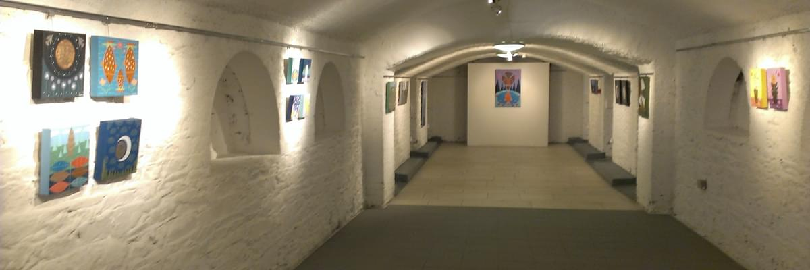

About the Festival
The Play This Indie Game Festival will take place at An Táin Arts Centre in Dundalk, Ireland, in April 2026. This full day event is a celebration of creativity, play, and community, bringing together industry veterans, independent developers, students, and families for a fun and inspiring weekend.
The festival will showcase student projects, independent games, and hidden gems that might otherwise go unnoticed. Visitors will have the chance to discover unique creations, meet the people behind them, and experience the joy of games in new ways.
With talks, demonstrations, and plenty of opportunities to play, Play This IGF is designed to be welcoming for everyone — from curious families with kids to aspiring game creators and seasoned enthusiasts.
Join us at An Táin Arts Centre in Dundalk for two days of discovery, play, and inspiration.
Play. Discover. Enjoy.
Program Highlights
Enjoy talks, live demonstrations, and hands-on opportunities to play unique and inspiring games. A welcoming atmosphere for everyone!
The Venue
Hosted at An Táin Arts Centre in Dundalk, the festival offers a central and creative space to explore the world of indie games.
